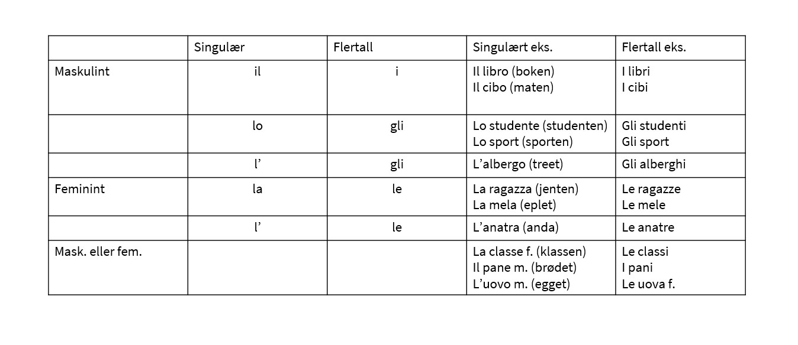

Italienske substantiv

På italiensk er substantiv enten hunkjønn eller hankjønn. Som oftest vil hannkjønn i entall slutte på o og i flertall på i, mens hunkjønn vil i entall slutte på a og i flertall på e.
Substantiv:
- Il ragazzo -> i ragazzi (gutten -> guttene) | De fleste substantiv i hankjønn
- La ragazza -> le ragazze (jenten -> jentene) | De fleste substantiv i hunkjønn
- Lo stivale -> Gli stivali (Støvelen -> Støvlene) | Substantiv som starter på z eller s + konsonant
- Substantiv som slutter på -ma er som oftest hankjønn på tross av at de slutter på a. Dette kommer av at de er hentet fra gresk. Eksempler på dette er "il problema" og "il tema".
- Substantiv som slutter på à i entall gjør også det i flertall. L'università -> Le università.
- Substantiv som er hentet fra eksempelsvis engelsk vil heller ikke endres fra entall til flertall. Eks: Il film -> i film.

I vår pilotepisode tok vi for oss substantiv. Hør på det her: